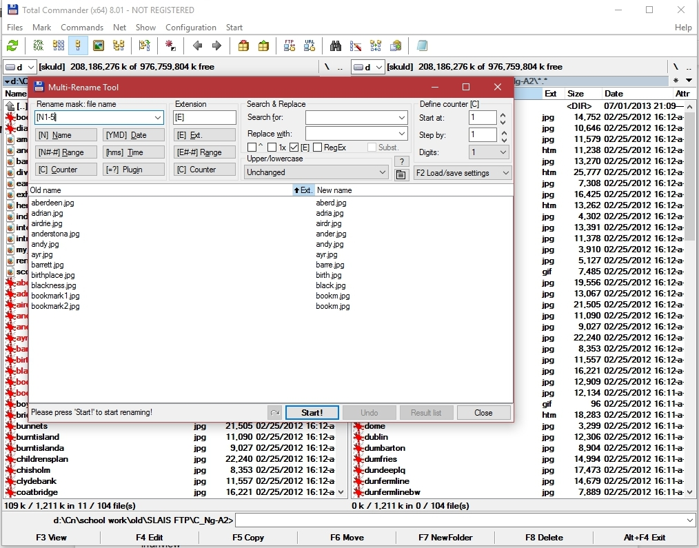
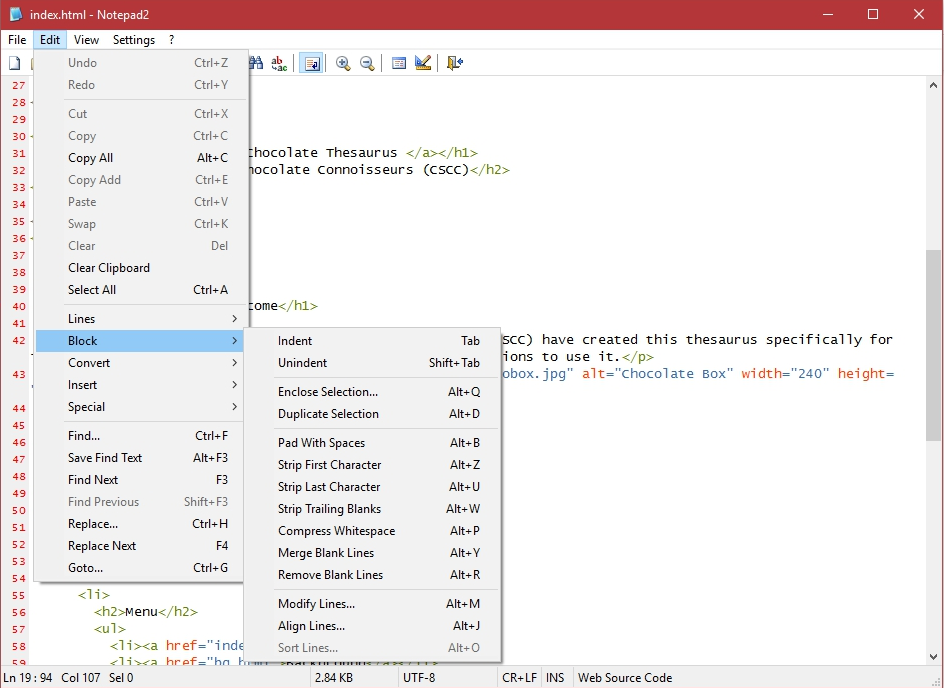
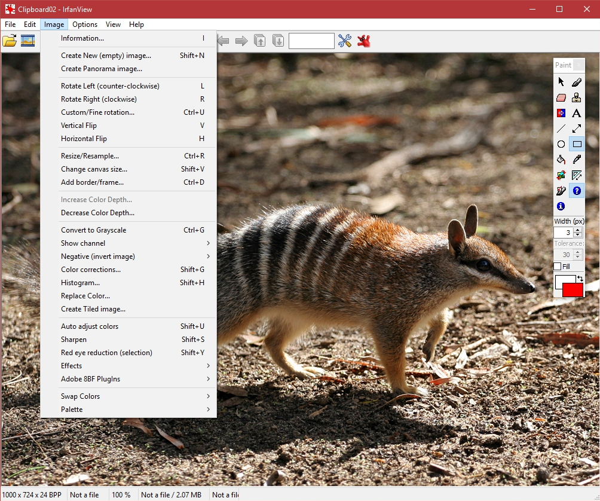
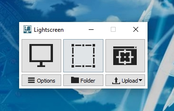
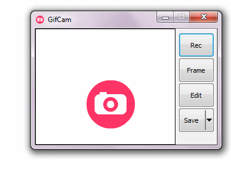
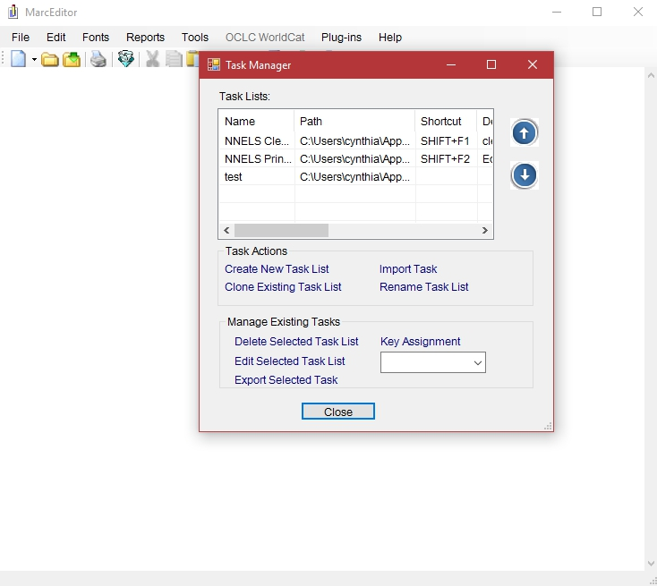
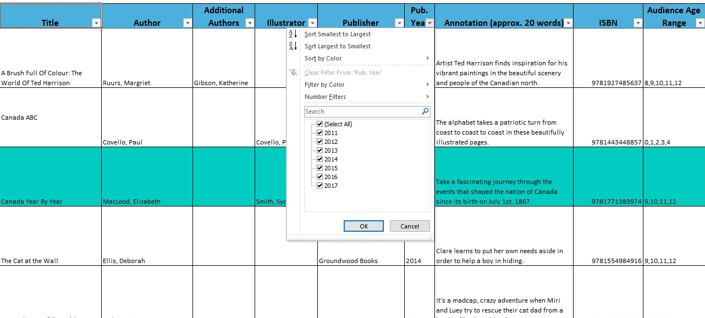
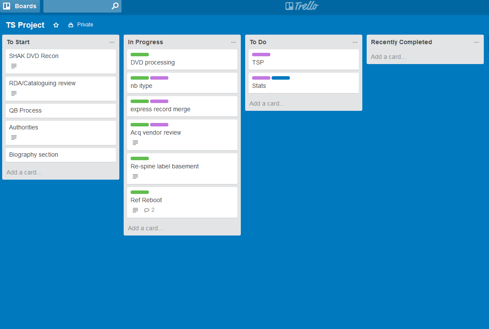

Reviewing and Improving Workflow and Productivity: Methods and Tools
Cynthia Ng
@TheRealArty
September 28, 2017
 Kuribo. (2008). Red panda eating. Wikimedia Commons. https://commons.wikimedia.org/wiki/File:Red_Panda_eating.jpg CC BY-SA 2.0
Kuribo. (2008). Red panda eating. Wikimedia Commons. https://commons.wikimedia.org/wiki/File:Red_Panda_eating.jpg CC BY-SA 2.0
{kind=link}
Some Context
Understanding Workflow
Flowchart
Task Analysis
Journey Sheet

Types of Material
- Hardcover
- Trade Paperpack
- Children's Fiction
- Children's Non-Fiction
- Magazine
- Newspaper
- DVD
Swim Lanes
 Kerr, P. (2006). Swimlanes flowchart of a business process. Wikimedia Commons. https://commons.wikimedia.org/wiki/File:Approvals.jpg Public Domain.
Kerr, P. (2006). Swimlanes flowchart of a business process. Wikimedia Commons. https://commons.wikimedia.org/wiki/File:Approvals.jpg Public Domain.
{kind=link}
Questions to Ask
- Does the order make sense?
- Which steps are flexible in the ordering? Conditional upon other steps being completed?
- Can specific steps be done more efficiently?
- How many people are involved? Can it be reduced?
- Is the most suitable person doing each step?
- Is the process consistent? Consistent with other departments?
The Ideal Workflow
Reorganization
Card Sort Variants
Getting to the Ideal

Tools to Increase Productivity
KeePass (Keychain)
 Reichl, D. (2010). KeePass Main Window. https://en.wikipedia.org/wiki/File:KeePass_Main.png Free license.
Reichl, D. (2010). KeePass Main Window. https://en.wikipedia.org/wiki/File:KeePass_Main.png Free license.
{kind=link}
Total Commander (muCommander)
Notepad2
IrfanView

Lightscreen
GifCam
PDFtk
 PDF Labs. (2014). PDFtk Free. https://www.pdflabs.com/tools/pdftk-the-pdf-toolkit/.
PDF Labs. (2014). PDFtk Free. https://www.pdflabs.com/tools/pdftk-the-pdf-toolkit/.
Sublime Text
 Roe, A. (2012). Sublime Text 2. https://en.wikipedia.org/wiki/File:Sublime-text-2-screenshot.png Copyrighted/Fair Use.
Roe, A. (2012). Sublime Text 2. https://en.wikipedia.org/wiki/File:Sublime-text-2-screenshot.png Copyrighted/Fair Use.
{kind=link}
MarcEdit
Excel
Trello
Take Away
Thanks!

- Cynthia Ng
- @TheRealArty
- about.me/cynthiang